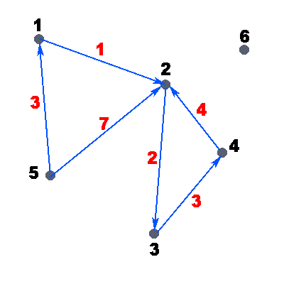

Способы хранения графов в памяти компьютера
Содержание:
- Введение
- Матрица смежности
- Описание Бержа
- Список дуг
- Список смежности
- Оптимизация к списку смежности
- Заключение
1. Введение
Для начала разберёмся, что же такое граф и какие они бывают.
Граф - множество V вершин и набор E неупорядоченных и упорядоченных пар вершин. Говоря проще, граф - это множество точек (вершин) и соединяющих их путей (дуг или рёбер). Граф может быть ориентированным и неориентированным. В ориентированном графе пути (дуги) имеют направление, а в неориентированном - не имеют. Пути в неориентированном графе называются рёбрами.
Взвешенным называется такой граф, для каждого ребра(дуги) которого определена некоторая функция. А эта функция называется весовой.
Рассмотрим пример ориентированного взвешенного графа:

На рисунке точками обозначены вершины графа, стрелками - дуги, чёрные числа - номера вершин графа, а красные - веса дуг. Вес дуги можно представить также как стоимость. Т.е. например: дан граф, нужно дойти от вершины i до вершины j, заплатив минимальное количество денег/потратив наименьшее количество времени. Пусть в нашем графе, который представлен на рисунке, нам нужно пройти из вершины 5 в вершину 2, а вес дуг - стоимость прохода по данному ребру. В данном примере очевидно, что выгоднее пройти через вершину 1 и только потом прийти в вершину 2, так мы заплатим всего 4 единицы денег, иначе, если пойти напрямую, мы заплатим целых 7 единиц.
Ну вот мы и разобрались, что такое граф. На рисунке всё смотрится красиво, все задачи вроде бы решаются легко... Но! А если граф будет действительно большим, например на 1000 вершин? Да, такой граф на бумажке рисовать очень долго и неприятно... Пускай лучше всё это делает за нас компьютер!
Теперь осталось только научить компьютер работать с графами. Сам я довольно часто участвую в олимпиадах по информатике, а там очень любят давать задачи на графы. От того, как хранить граф в той или иной задаче очень много зависит... После того, как я придумал полное решение, но, написав его, получил только половину баллов, я задумался, а правильно ли я хранил граф?
Проблема правильного хранения графа в памяти компьютера действительно актуальна в сегодняшние дни. Я решил выяснить, так какой же из способов всё-таки лучше.
2. Матрица смежности
Один из самых распространённых способов хранения графа - матрица смежности. Она представляет из себя двумерный массив. Если в клетке i,j установлено значение ПУСТО, то дуги, начинающейся в вершине i и кончающейся в вершине j, нет. Иначе дуга есть. Чаще всего за значение ПУСТО берут 0, а в клетки, которые обозначают наличие дуги, вписывают вес этой дуги. Если граф не взвешенный, то вес дуги считается равным единице. Нарисуем матрицу смежности для нашего графа:
| 1 | 2 | 3 | 4 | 5 | 6 | |
| 1 | 0 | 1 | 0 | 0 | 0 | 0 |
| 2 | 0 | 0 | 2 | 0 | 0 | 0 |
| 3 | 0 | 0 | 0 | 3 | 0 | 0 |
| 4 | 0 | 4 | 0 | 0 | 0 | 0 |
| 5 | 3 | 7 | 0 | 0 | 0 | 0 |
| 6 | 0 | 0 | 0 | 0 | 0 | 0 |
Я намеренно употреблял слово "дуга", т.к. матрица смежности приспособлена ТОЛЬКО для ориентированных графов. Очень много способов хранения приспособлены только для ориентированных графов. Однако почти во всех задачах ребро можно заменить двумя дугами, т.е. если у нас есть ребро (1,3), то мы можем заменить его на дуги (1,3) и (3,1) - так мы сможем пройти в любом направлении в любое время.
Как вы уже заметили, в матрице смежности нам часто нужно хранить большое количество нулей. Например, в нашей матрице "нужных" значений только 6, а остальные 30 - нули, не представляющие для нас почти никакой нужной информации.
Для представления графа матрицей смежности нужно V в квадрате (где V - количество вершин). Если граф почти полный, т.е. Е почти развно V в квадрате (где Е - количество дуг), этот способ хранения графа наиболее выгоден, т.к. его очень просто реализовывать и память будет заполнена "нужными" значениями.
Кроме большого количества требуемой памяти и медленной работы на разреженных графах у матрицы смежности есть ещё один важный недостаток. Иногда в задачах нужно выводить не номера вершин, а номера дуг(рёбер) на вводе. Хранить эти номера матрица смежности не умеет. Нужно реализовывать восстановление номера дуги(ребра) как-то иначе, а это совсем неудобно.
Временные сложности сведены в таблицу:
| Операция | Временная сложность |
| Проверка смежности вершин x и y | О(1) |
| Перечисление всех вершин смежных с x | О(V) |
| Определение веса ребра (x, y) | О(1) |
| Перечисление всех ребер (x, y) | О(V2) |
3. Описание Бержа
Для того чтобы ускорить работу матрицы смежности на разреженных графах, можно использовать другой тип хранения графа - описание Бержа. Для каждой вершины хранится список смежных вершин. Чаще всего для этого используется двумерный массив размером V в квадрате, в строке u которого хранятся номера вершин, смежных с u. В нулевой элемент строки u вписывается количество вершин, хранящихся в данной строке. Теперь попробуем представить наш граф при помощи описания Бержа на примере:
| 0 | 1 | 2 | 3 | 4 | 5 | 6 | |
| 1 | 1 | 2 | 0 | 0 | 0 | 0 | 0 |
| 2 | 1 | 3 | 0 | 0 | 0 | 0 | 0 |
| 3 | 1 | 4 | 0 | 0 | 0 | 0 | 0 |
| 4 | 1 | 2 | 0 | 0 | 0 | 0 | 0 |
| 5 | 2 | 1 | 2 | 0 | 0 | 0 | 0 |
| 6 | 0 | 0 | 0 | 0 | 0 | 0 | 0 |
В нулевом столбце хранятся "длины" строк. Однако, вес дуг никак не хранится, а если его хранить отдельно, то нужно заводить ещё один массив размером V в квадрате...
Временные сложности сведены в таблицу:
| Операция | Временная сложность |
| Проверка смежности вершин x и y | О(V) |
| Перечисление всех вершин смежных с x | О(V) |
| Определение веса ребра (x, y) | Вес не хранится |
| Перечисление всех ребер (x, y) | О(Е) |
4. Список дуг
Следующий тип хранения графа в памяти компьютера - список дуг. Чаще всего это двумерный массив размером 3*E, в первой строке которого хранится информация, из какой вершины начинается дуга, во второй - в какой кончается, а в третьей строке - вес дуги. Опять же разберёмся на примере:
| 1 | 2 | 3 | 4 | 5 | 6 | 7 | 8 | |
| 1 | 1 | 2 | 3 | 4 | 5 | 5 | 0 | 0 |
| 2 | 2 | 3 | 4 | 2 | 1 | 2 | 0 | 0 |
| 3 | 1 | 2 | 3 | 4 | 3 | 7 | 0 | 0 |
Мы чётко видим, что почти вся таблица заполнена "нужными" значениями, а не нулями. Это уже хорошо, значит, память экономится.
Временные сложности сведены в таблицу:
| Операция | Временная сложность |
| Проверка смежности вершин x и y | О(E) |
| Перечисление всех вершин смежных с x | О(E) |
| Определение веса ребра (x, y) | О(E) |
| Перечисление всех ребер (x, y) | О(E) |
| Поиск i-ой дуги | О(1) |
Как видно, этот способ, в отличие от матрицы смежности и описания Бержа, хранит информацию о номере дуги. Также ясно, что этот способ нам выгоден, если чаще всего нам нужно будет узнать что-то (вес, вершины начала или конца) о i-ой дуге. Однако, такие задачи в практическом программировании встречаются довольно редко.
Если в предыдущих представлениях одно ребро мы заменяли двумя дугами, то список дуг может хранить или дуги или рёбра (в зависимости от реализации). Это довольно удобно и может требовать в 2 раза меньше памяти.
5. Список смежности
И последний способ, про который я вам расскажу - список смежности. Он представляет из себя два массива: vert и adj.
Из каждой вершины может выходить 0, 1 и более дуг, причём вершин будет V или менее. Если из вершины i не выходит дуг (т.е. количество дуг равно нулю), то в массиве vert в i-ой клетке будет храниться значение ПУСТО. Если из вершины i выходит хотя бы одна дуга, то в массиве vert в i-ой клетке будет храниться номер элемента массива adj, в котором хранится конечная вершина дуги. Также в массиве adj хранится вес дуги, и указатель на следующую "конечную" вершину дуги, которая начинается в вершине i. Поначалу может показаться, что этот способ очень запутан, т.к. один массив указывает на другой, другой сам на себя, при чём много раз. Однако это не совсем так, т.к. следует лишь несколько раз самому попробовать реализовать хранение графа таким способом, и он кажется очень мощным, полезным и несложным. Давайте сами попробуем разобраться на примере.
На вход нам подаются следующие данные:
6 6 5 1 3 1 2 1 4 2 4 2 3 2 3 4 3 5 2 7
Так выглядит массив vert:
| 1 | 2 | 3 | 4 | 5 | 6 |
| 2 | 4 | 5 | 3 | 1 | 0 |
А вот так массив adj:
| 1 | 2 | 3 | 4 | 5 | 6 | 7 | 8 | |
| 1 | 1 | 2 | 2 | 3 | 4 | 2 | 0 | 0 |
| 2 | 3 | 1 | 4 | 2 | 3 | 7 | 0 | 0 |
| 3 | 6 | 0 | 0 | 0 | 0 | 0 | 0 | 0 |
В массиве adj первая строка - конечная вершина дуги, вторая - её вес, а третья - ссылка на следующую.
В этом примере я специально вводил дуги не по порядку, чтобы можно было лучше разобраться, и было видно, что позиции могут быть совершенно различными. Например, первая конечная вершина дуги, начинающейся в вершине 5, лежит в массиве adj на первой позиции, а не на пятой.
Рассмотрим временные сложности:
| Операция | Временная сложность |
| Проверка смежности вершин x и y | О(E) |
| Перечисление всех вершин смежных с x | О(E) |
| Определение веса ребра (x, y) | О(E) |
| Перечисление всех ребер (x, y) | О(E) |
| Поиск i-ой дуги | О(1) |
Времена у всех операций, вроде бы, такие же, как и у списка рёбер. Однако, большинство из них реально намного меньше. Например, проверка смежности вершин x и y и перечисление всех вершин смежных с x в списке рёбер гарантированно будет выполнятся О(Е) операций, т.к. нам обязательно нужно пробежать весь список, а в списке смежности мы бежим только по вершинам, смежным с х.
6. Оптимизация к списку смежности
UPD: Данная оптимизация не актуальна. Лучше вместо хранения ссылки на следующий элемент хранить ссылку на предыдущий.
Когда я первый раз пытался разобраться, что такое список смежности, меня очень смутила процедура добавления дуги. Для того, чтобы добавить дугу (i,j) мы должны начать из вершины i и пройти по всем вершинам, смежными с нею. И так каждый раз! А что если вершине х инцидентны E рёбер? Тогда сложность добавления O(E в квадрате) ! Это совсем не годится.
А почему бы нам не добавлять ребро сразу туда, куда надо? Конечно, при считывании, мы сразу записываем данные в нужную нам ячейку (в конец получившегося списка). Но ведь на эти данные нужно сделать указатель. Самое тяжёлое - найти место, где делать указатель. Поиск этого места и занимает основу драгоценного времени. А что, если хранить указатель не только на первую конечную вершину дуги, но и на последнюю? Тогда наша проблема решена! Добавление занимает О(1) времени, но требует дополнительно О(V) памяти...
Рассмотрим данную оптимизацию на примере. Изменится только вид массива vert, поэтому рассмотрим только его:
| 1 | 2 | 3 | 4 | 5 | 6 | |
| 1 | 2 | 4 | 5 | 3 | 1 | 0 |
| 2 | 2 | 4 | 5 | 3 | 6 | 0 |
Здесь в первой строке массива vert хранится указатель на первую конечную вершину, во второй - на последнюю. В данном примере польза от этой оптимизации почти не заметна, т.к. максимальное вершин, исходящих из одной дуги, равно 2, что очень мало. Если дуг, инцидентных одной вершине, будет много, то и ускорение будет довольно большое и "лишняя" выделенная память окупится.
Возможно, о данной оптимизации к списку смежности где-то уже было написано до меня, но ни в интернете, ни в печатных источниках я этого не встречал.
7. Заключение
Я пытался найти универсальный способ хранения графа в памяти компьютера, который бы хранил максимально много информации о графе, работал с любыми графами и работал бы быстро. Однако, универсального способа нет. Для различных задач и графов оптимальны различные представления. Конечно, наиболее мощным и универсальным способом хранения является список смежности. С моей оптимизацией он работает быстрее и всё ещё требует не так уж и много памяти. Однако, если количество дуг приближается к квадрату количества вершин, то лучше матрицы смежности способа не найти, т.к. тогда скорость работы и количество памяти даже списка смежности приближается к матрице смежности, если не требует больше... Конечно, можно написать и список смежности, однако пишется он дольше матрицы смежности, да и работать с матрицей смежности намного проще.
Конечно, мною были рассмотрены не все способы представления графов в памяти компьютера. Я старался рассмотреть лишь те, которые смогут реально помочь в олимпиадном программировании, т.е. пишутся наиболее быстро, быстро работают, и требуют немного памяти. Я рассмотрел только статические способы представления графа в памяти компьютера. Есть ещё различные динамические способы хранения графов, они занимают меньше памяти, иногда быстрее работают. Однако и пишутся они намного сложнее. Например, элементарная работа с графом, хранящимся в структуре Вирта, еле-еле влазит в 250 строк кода на паскале...
Конечно, в профессиональном программировании лучше использовать динамические методы, однако и старые добрые статические способы от них не так уж и далеко отстают! 
Скачать в формате PDF (150.3 kB)